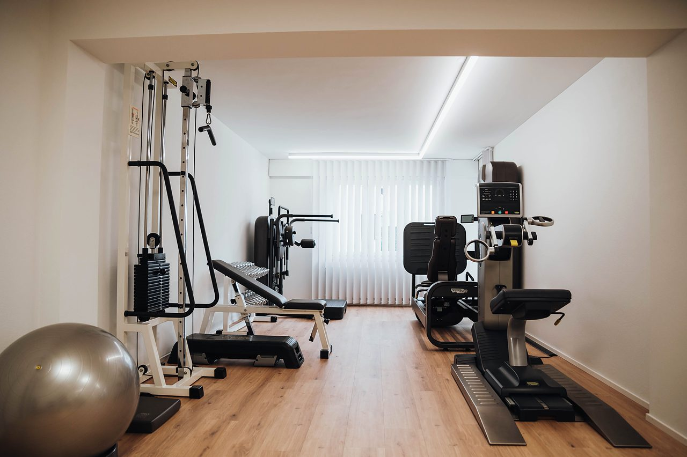
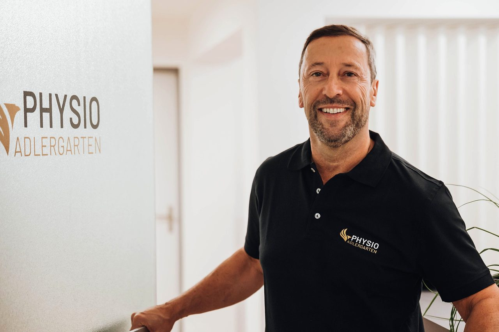
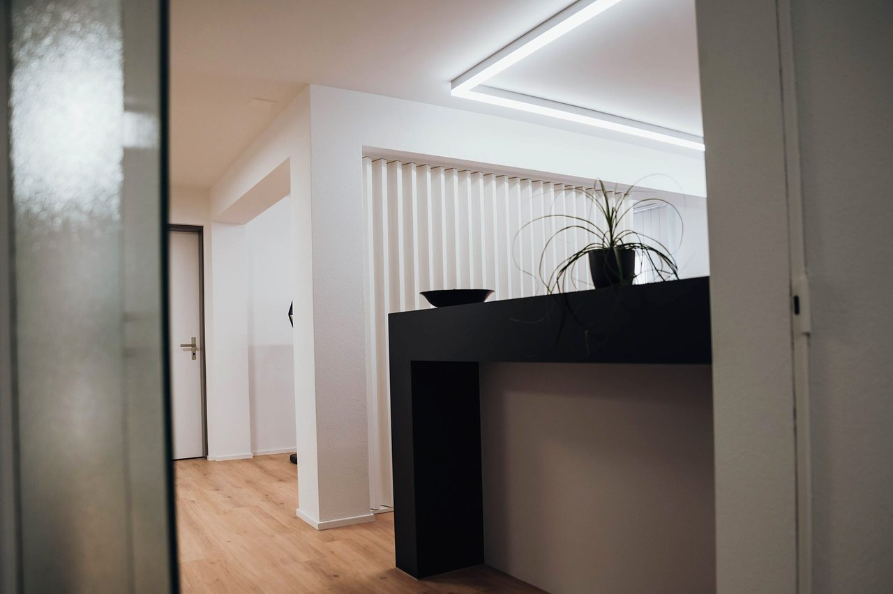
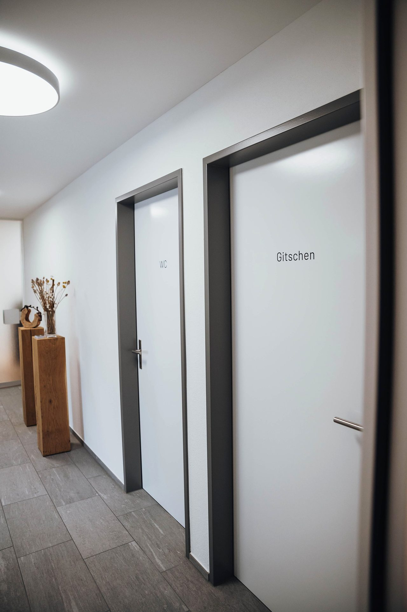
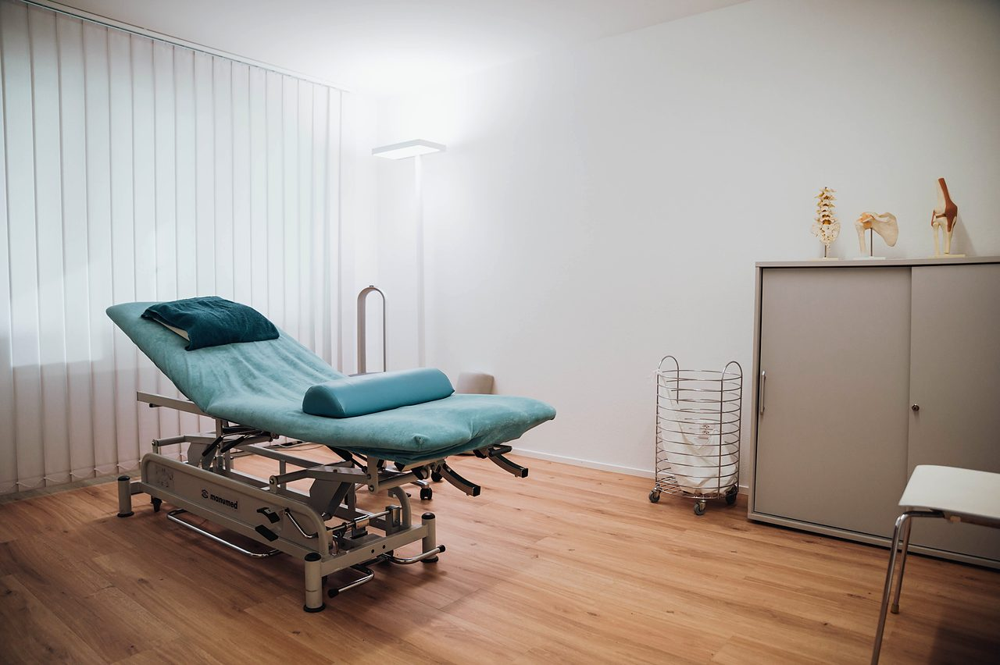
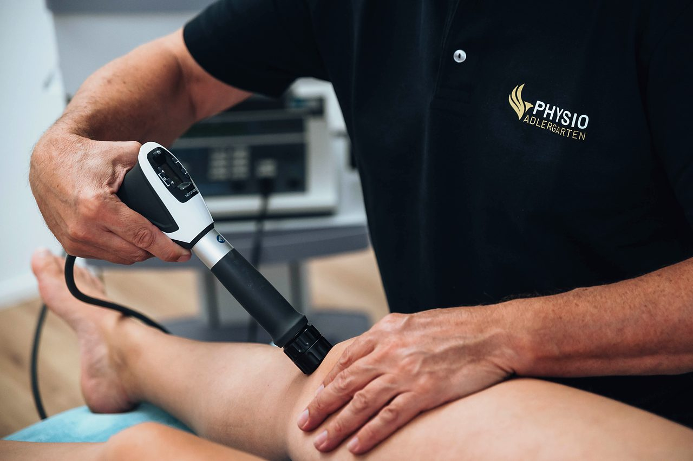
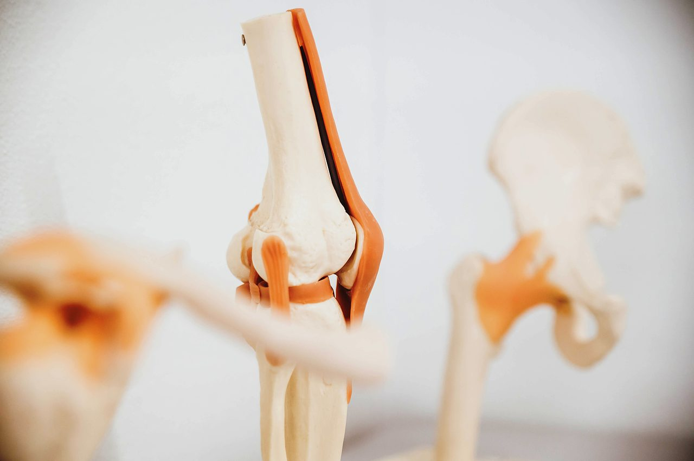
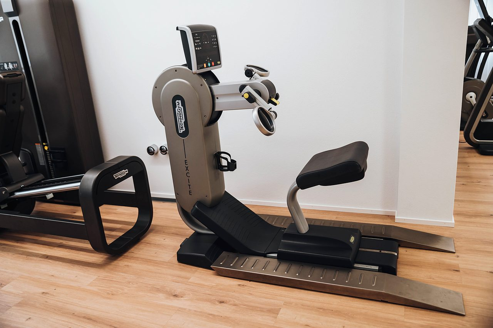
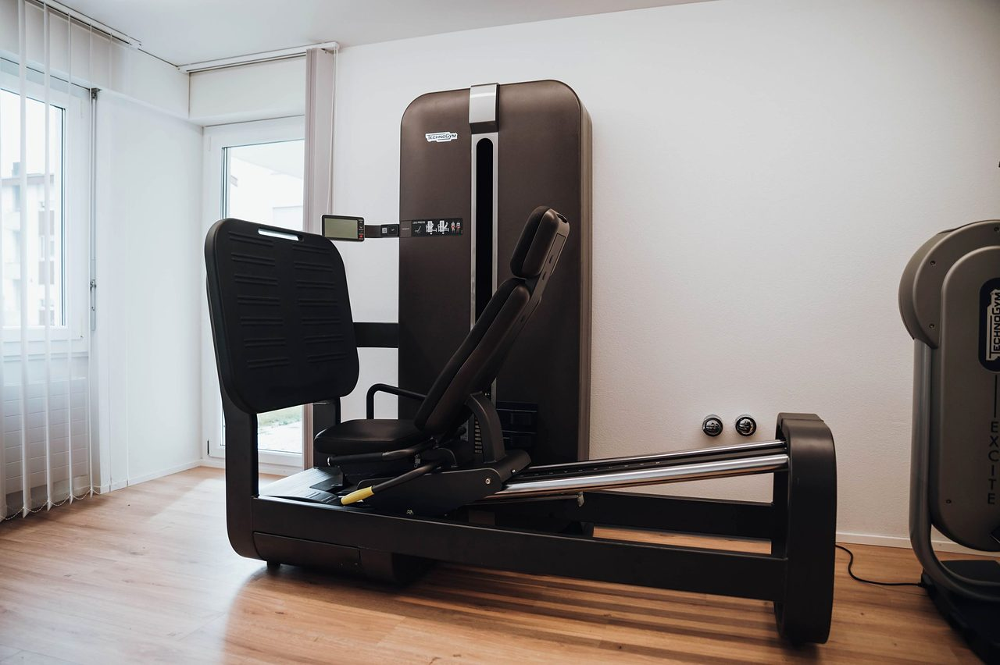

Nächster Halt: Adlergarten.
Sportphysiotherapie in Schattdorf. Behandlung und Training, Tür an Tür, Montag bis Freitag bis 19.00 Uhr.
Ich bin Koen Haelters.
Dipl. Physiotherapeut und dipl. Sportphysiotherapeut. Ich arbeite mit einem Behandlungskonzept, das auf Sie abgestimmt ist, und suche mit Ihnen die Ursache, nicht nur das Symptom.

Ob Sie sich auf den Alltag vorbereiten oder auf den Sport: Ich unterstütze Sie gerne dabei. Im Sport bin ich Physiotherapeut der Handballer des KTV Altdorf, Nationalliga B.
- Weiterbildungen (Auswahl)
- Sports Physical Therapist (IAS) · Golf-Physiotherapeut · Rehabilitation nach Sportverletzungen · Dry Needling (IMTT) · Manuelle Triggerpunkttherapie (IMTT) · Fussball, Tennis, Bergsport (GOTS)
- Trainer
- Power Plate · Blackroll
- Mitglied
- Physioswiss (SPV) · SVSP Sportphysiotherapie · IMTT · FPMS
Ein Gang durch die Praxis.
Drei Behandlungsräume auf über 200 m², neu gestaltet. Von der Haltestelle bis zur Beinpresse.
-
00
Aussteigen
Der Bus hält an der Haltestelle Adlergarten, direkt vor dem Gebäude. Mit dem Auto: Parkplätze vor der Praxis.
-

01
Ankommen
Der Empfang an der Adlergartenstrasse 61.
-

02
Tür an Tür
Drei Behandlungsräume am selben Flur.
-


03
Passive Therapie
Massagen · Triggerpunktbehandlung · Dry Needling · Sporttaping und Kinesiotaping · Ultraschall · Laser · Wärme und Kälte · Game Ready · Bemer · Theragun · Atemtherapie
-

04
Ursache vor Symptom
Anatomiemodell von Knie und Hüfte.
-

05
Aktive Therapie
Sie trainieren selbstständig unter Aufsicht, mit Technogym-Geräten: die medizinische Trainingstherapie (MTT).
-
06
Hantelbereich
-

07
Beinpresse
Dazu Laufband, Velo und Sitzvelo, Handvelo und Crosstrainer.
-
Und jetzt Ihr Termin.
Termin anfragen.
Wählen Sie einen Wunschtag und eine Tageszeit. Ich melde mich, um den Termin zu bestätigen.
Lieber direkt? 041 871 29 08, Montag bis Freitag 07.30–12.00 und 13.30–19.00 Uhr.
Im Notfall: Sanitätsnotruf 144.